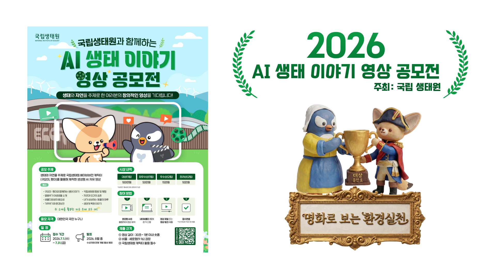
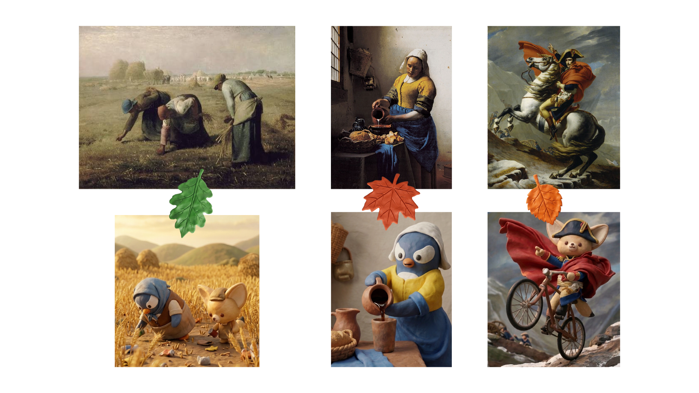
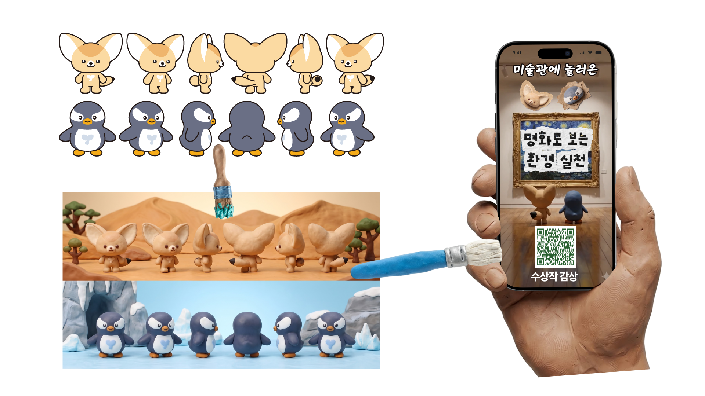

2026 · AI 생태 이야기 영상 공모전

참여계기
생성형 AI로 기획·이미지·영상·편집을 혼자 도전해 보는 계기를 찾고 있던 중에, 결과를 검증받을 수 있는 공모전을 찾게 되어 도전해 보았고 그 결과 대상을 수상하였습니다.

기획의도
환경보호 실천이라는 주제는 많이 쓰인 내용이라 생각해서 같은 내용을 말하기보다는, 바라보는 방식의 차별점을 주기 위해 재밌는 시각에서 바라보면 어떨까 하는 생각에 어릴 때 즐겨봤던 클레이 애니메이션 스타일과 미술작품이라는 컨셉을 생각하게 되었습니다.

제작과정
요구사항 : 원본캐릭터를 응용, 9:16비율
아트 스타일 : 클레이 애니메이션
사용된 AI : 구글 FLOW
기타 프로그램 : 프리미어 프로
출판편집
CASE 02

주요 담당 업무
해외 단행본 만화의 국내 정식 발간을 위한 식자·어시스트 편집 작업을 담당하였습니다.
작업 내용 및 사용 프로그램
작업 기간 : 2019 — 현재
주요 작업 : 대사 식자 디자인, 효과음 리터칭
사용 프로그램 : 포토샵(Photoshop), 일러스트레이터(Illustrator), 인디자인(InDesign)
웹툰제작
CASE 03

주요 담당 업무
기존 출판 만화를 모바일 스크롤 환경에 맞춘 웹툰 버전으로 재편집하는 작업을 진행하였습니다.
2026 · 해양안전 콘텐츠 공모전
CASE 05

참여계기
아이들 대상 안전 콘텐츠를 만들어 보고 싶었습니다. 구명조끼 착용은 해마다 강조되는데도 현장에서는 여전히 습관으로 자리 잡지 못한다는 기사를 반복해서 접했습니다. 설명이 아니라 노래로 만들면 다를 수 있지 않을까 하는 생각으로 이 공모전에 지원했습니다.

기획의도
구명조끼 착용은 한 번의 교육으로 끝나는 일이 아니라 매일 반복해야 하는 행동입니다. 그래서 규정을 나열하는 대신 아이가 따라 부를 수 있는 후렴을 먼저 만들었습니다. 버클이 잠기는 소리인 “딸깍”을 후렴의 첫마디로 두면, 노래를 흥얼거리는 것만으로 착용 행동이 떠오릅니다.
1절에는 어깨끈을 누르고 끈을 당겨 가슴에 맞추는 순서를, 2절에는 어른 손을 잡고 깊은 곳에 들어가지 않는 수칙을 담았습니다. 규정 조항과 수치는 노래에서 뺐습니다. 아이가 부를 수 없는 문장은 습관이 되지 않는다고 판단했기 때문입니다.

제작과정
요구사항 : 9:16 세로, 90초 이내, 생성형 AI를 활용한 창작물
아트 스타일 : 펠트 손인형 인형극, 옛 텔레비전 화면 연출
사용된 AI : 영상 Kling 3.0, 캐릭터와 배경 이미지 생성 모델, 음악 생성 모델
기타 프로그램 : 프리미어 프로
화면 구성
00:00 도입 : 두 인형이 올라와 자리 잡고 제목이 뜹니다
00:06 후렴 1 : 스트랩을 두드리고 파도처럼 흔들며 노래합니다
00:16 1절 : 어깨끈을 누르고 끈을 당기는 착용 순서입니다
00:31 후렴 2 : 두 인형이 함께 율동하며 후렴을 반복합니다
00:40 2절 : 손을 잡고 모래밭에서 노는 물놀이 수칙입니다
00:54 후렴 3 : 파도 세트에서 팔을 벌린 채 마지막 후렴입니다
01:08 엔딩 : 하늘로 올라가며 공모전 정보와 기관 로고가 나옵니다
검수 기록
입을 벌릴 때 이빨과 혀가 드러남 : 입 벌림 폭을 제한하고 입 안쪽 표현을 금지하는 문장을 추가
착용 동작이 조끼를 벗는 것으로 해석됨 : 이미 입고 있는 상태로 한정하고 금지 문장을 명시
한쪽 인형이 화면 내내 정지 : 대기 문장을 삭제하고 두 인형 모두 움직이도록 재설계
배경이 프레임마다 미세하게 흔들림 : 카메라 고정과 배경 유지를 전 컷에 명시
팔이 옆으로 뻗어 마네킹처럼 굳음 : 팔은 어깨 높이를 넘지 않도록 제한
완성 화면
옛 텔레비전 방영물 같은 화면 연출을 적용했습니다. 스캔라인과 비네트, 노이즈, 미세한 색수차를 직접 제작한 오버레이로 얹었고, 가사 자막과 제목은 효과 위에 배치해 읽는 데 지장이 없도록 했습니다.